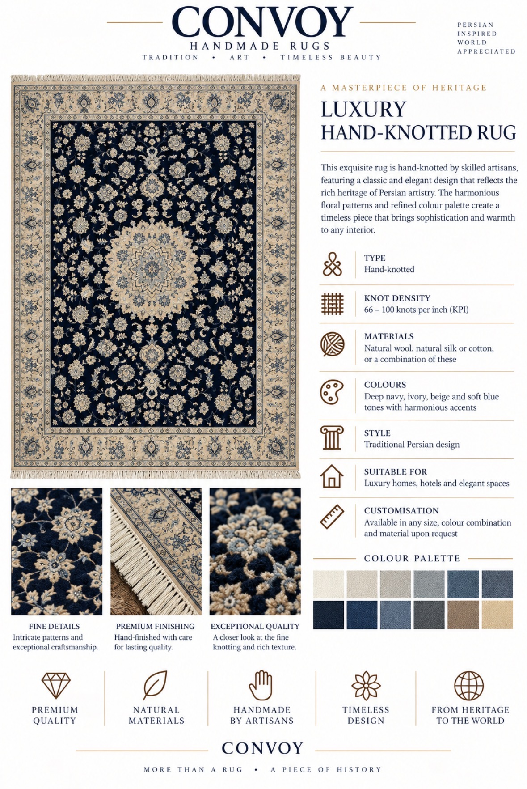
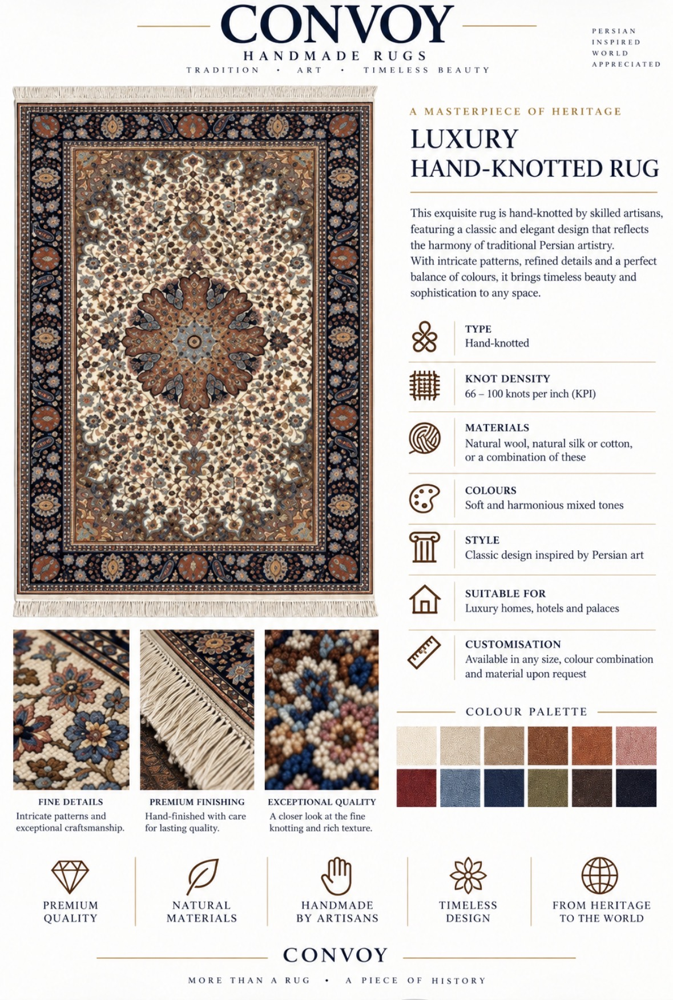
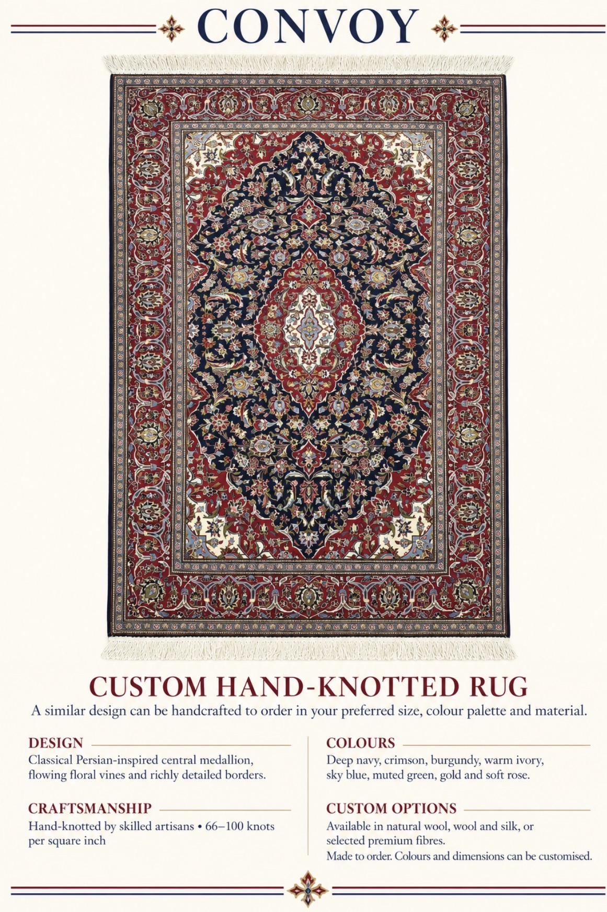

Traditional craftsmanship, individually created for you. Every CONVOY carpet can be commissioned in your preferred dimensions, colours and materials — handcrafted as an individual piece.



Every CONVOY carpet is made individually to order. You may select the dimensions, colour palette, design and materials, including natural wool, silk, cotton or selected combinations.
Each commissioned carpet can be accompanied by a personalised certificate bearing the owner's name and signed by the artisan responsible for weaving the piece.
For selected commissions, clients may also arrange to visit and experience the craftsmanship behind their carpet while it is being woven.
Made specifically for you in your selected size, colours, design and materials.
A certificate documenting the carpet and its owner, signed by the artisan.
Each qualifying CONVOY carpet can carry its own individual identification number.
Selected clients may arrange to experience their carpet during the weaving process.
CONVOY Technology is developing a new digital layer for the world of handmade carpets. Our vision is to give each qualifying piece a distinct digital identity designed to connect its craftsmanship, specifications, provenance and history.
We are not simply bringing handmade carpets to a new generation. We are bringing technology into the story of the carpet itself.